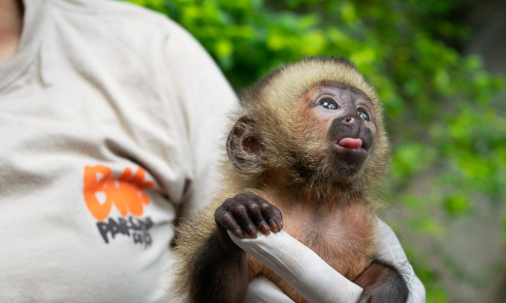

Como cuidar de um Macaquinho Prego |
|
Adquirir um macaco-prego legalizado não é um empreendimento barato. O valor costuma sair entre R$ 50 mil e
R$ 60 mil em vendas responsáveis. Por esse motivo, apenas pessoas com alta renda podem se comprometer com o investimento Lembramos, ainda, que esse gasto inicial é apenas para comprá-lo. Outros custos variáveis como alimentação, vacinação, consultas veterinárias e mais cuidados devem ser previstos no orçamento. |
Dicas |
Primeiro Passo |
 |
|
Construa uma jaula grande para o filhote de macaco-prego, com pelo menos 2 m de altura e 1,5 m de largura.
Macacos-pregos precisam ser supervisionados o tempo todo. Quando você não estiver em casa, eles devem ser mantidos na
jaula. Você precisará de uma jaula em um ambiente interno e uma em espaço externo, já que eles gostam de ficar fora de casa.
| |
Segundo Passo | |
|
Equipe a jaula com coisas que atendam às necessidades de entretenimento e conforto do seu macaco-prego.
A jaula deve ter vários galhos para escalar. Instale itens de recreação como balanços, pneus pendurados,
brinquedos plásticos para bebês, casca de coco, espelhos inquebráveis, escadas, canos de plástico, pequenas plataformas,
pedras ou um pequeno lago. Os brinquedos terão de ser substituídos com frequência porque os macacos-pregos ficam entediados.
A jaula também precisa de uma caixa de dormir -- ou se esconder -- para que o macaco possa descansar.
|
|
Terceiro Passo | |
|
Alimente o macaco-prego com uma dieta saudável. Existem alimentos especiais em forma de pó para primatas filhotes.
Você pode também alimentá-lo com papinha e fórmula infantil. Alimente o macaco a cada duas horas.
| |
Quarto Passo |
|
|
Coloque uma fralda no macaco quando ele estiver fora da jaula, senão ele poderá urinar e defecar onde quiser.
Você pode treiná-lo quando estiver mais velho.
| |
Quinto Passo | |
|
Dê bastante atenção e afeição ao macaco-prego. Segure-o e brinque com ele com frequência. Um macaco-prego
filhote precisa de tanta atenção e tempo quanto uma criança recém nascida. Ele chegará à fase adulta quando
estiver com dois anos de idade, mas seu comportamento será similar ao de uma criança de dois anos. Se você trabalha
em tempo integral ou tem filhos, o macaco-prego pode não ser o animal ideal para você. Trabalhe para criar laços
entre você e o macaco -- eles durarão a vida toda..
|